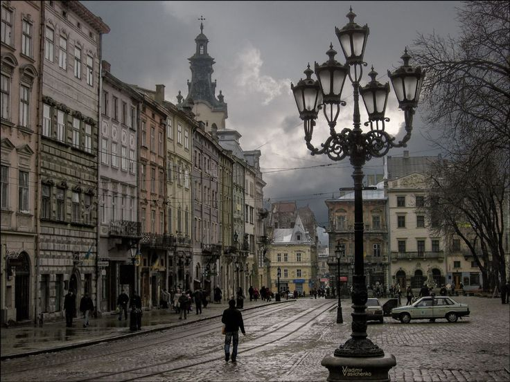

Народилася 8 січня 2007 року в Черкаському районі.
Здобуває освіту в Національному технічному університеті України «Київський політехнічний інститут» ім. Ігоря Сікорського, м. Київ.
Хобі:
Улюблені книги:
Львів (пол. Lwów, нім. Lemberg) — одне з найбільших міст Західної України, адміністративний центр Львівської області, засноване в середині XIII століття королем Данилом Галицьким і назване на честь його сина Лева. Місто здавна лежить на перетині торговельних шляхів між Центральною та Східною Європою, що визначило його багатонаціональну історію та неповторну архітектуру Старого міста — поєднання готики, ренесансу, бароко й модерну, завдяки якому історичний центр Львова занесено до списку Світової спадщини ЮНЕСКО. За свою багатовікову історію Львів встигав бути столицею й адміністративним центром кількох держав.
У XIV столітті Львів був столицею Королівства Руського,
у 1434–1772 рр. — центром Руського воєводства Королівства Польського,
у 1772–1918 рр. — столицею Королівства Галичини та Володимирії у складі Австро-Угорської імперії,
а з 1991 року — обласним центром незалежної України.
